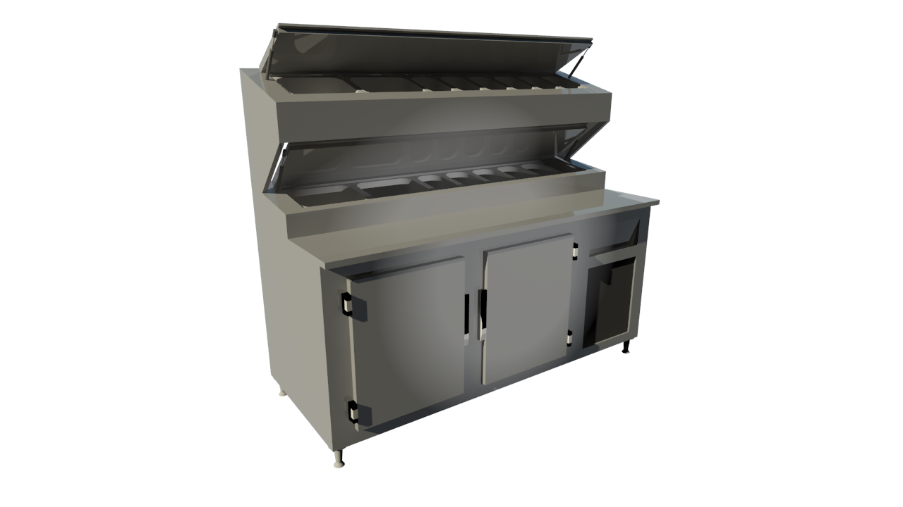
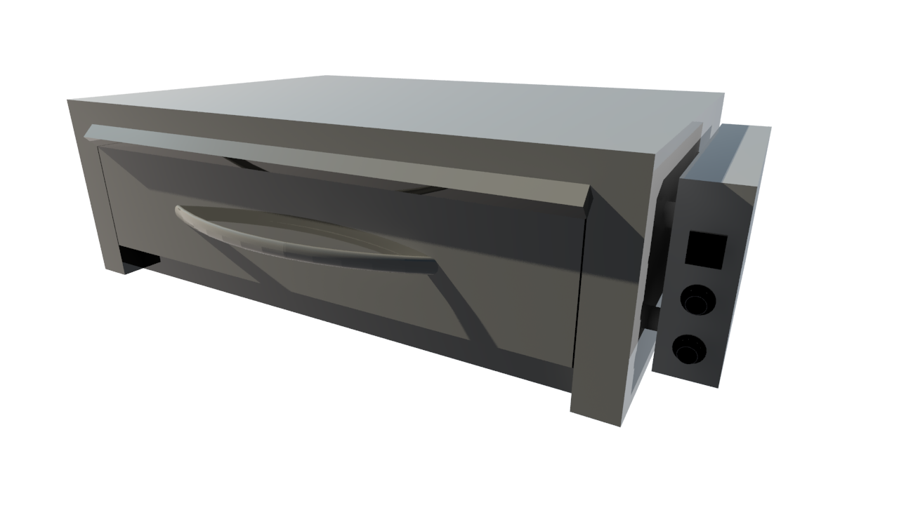
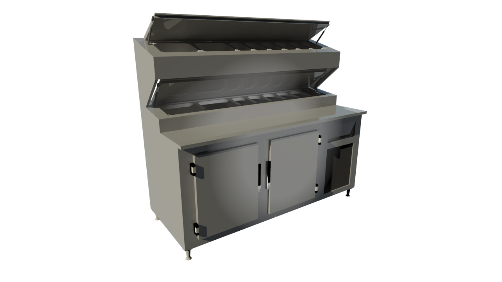
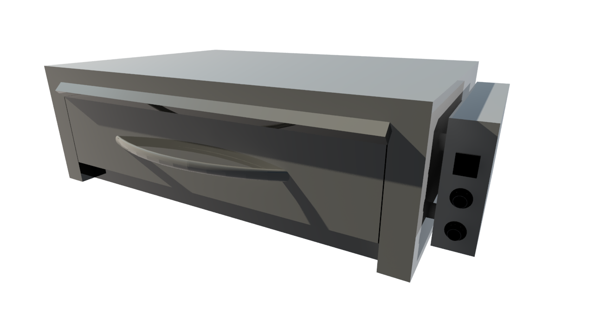

Empresa
Há mais de duas décadas, a Isoinox Indústria e Comércio LTDA tem sido uma presença importante no mercado, trazendo inovação e excelência em soluções para o seu restaurante. Desde o ano 2000, temos atendido clientes com uma gama diversificada de produtos e serviços para equipar e transformar restaurantes em empreendimentos de sucesso. Nossa paixão é ajudar você a realizar o seu sonho de um restaurante de qualidade.
O que nos torna únicos?
1. Equipe Multidisciplinar: Na Isoinox, acreditamos que a chave para o sucesso de um restaurante está na sua concepção. Por isso, nossa equipe multidisciplinar está à disposição para ajudá-lo desde o início do projeto. Oferecemos serviços de consultoria especializada e desenvolvimento de layout, auxiliando na criação de um espaço que seja não apenas funcional, mas também esteticamente atraente.
2. Qualidade Excepcional: Comprometemo-nos a oferecer produtos da mais alta qualidade. Nossos equipamentos são fabricados com os melhores materiais e seguindo rigorosos padrões de qualidade. Isso garante que você esteja investindo em durabilidade e desempenho superiores para o seu restaurante.
3. Flexibilidade de Negociação: Reconhecemos que cada restaurante é único, assim como as necessidades de nossos clientes. Portanto, oferecemos flexibilidade em nossas negociações. Adaptamos nossas soluções para atender ao seu orçamento e às suas especificações, tornando o processo de equipar o seu restaurante uma experiência acessível e conveniente.
Faça Seu Orçamento Conosco!
Estamos prontos para ajudá-lo a transformar seu sonho em realidade. Entre em contato conosco para fazer seu orçamento. Na Isoinox, estamos comprometidos com o sucesso do seu negócio, fornecendo produtos e serviços de excelência que farão a diferença. Junte-se a nós e descubra como podemos tornar seu restaurante um verdadeiro sucesso!
Produtos
Trabalhamos com a linha completa de equipamentos para atender todas as suas necessidades!
 





Catálogo para Download
Clientes
Alguns de nossos clientes parceiros: